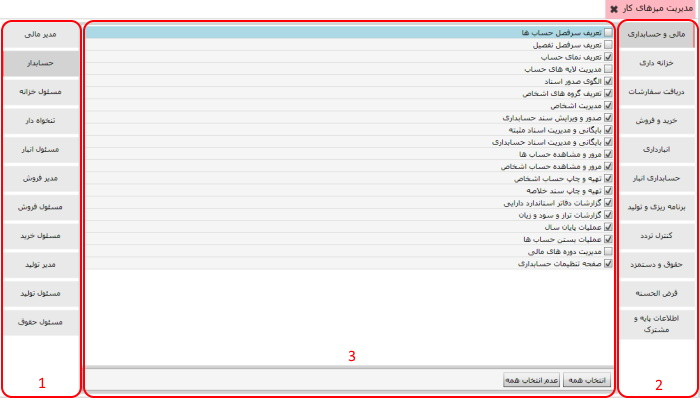

در این قسمت می توانید تعیین کنید هر کاربر به چه سیستم ها و منوهایی دسترسی داشته باشد اگر بر روی منوی «مدیریت میزهای کار» کلیک کنید صفحه زیر نمایان می شود
در تصویر بالا سه کادر قرمز رنگ مشاهده می کنید که در ذیل هر کدام از آن ها توضیح داده شده است.
کادر شماره 1:
برای اینکه دسترسی مورد نیاز را به کاربر تخصیص دهید
کادر شماره 2:
کادر شماره 3: